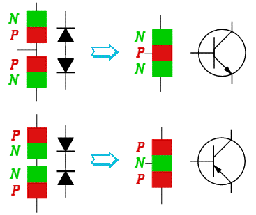
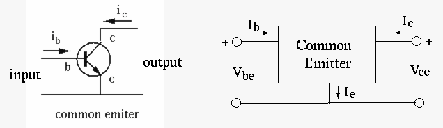
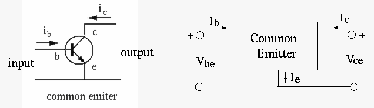

Next: DC Operating Point Up: ch4 Previous: Diodes
A Bipolar Junction Transistor (BJT) has three terminals connected to three doped semiconductor regions. In an NPN transistor, a thin and lightly doped P-type base is sandwiched between a heavily doped N-type emitter and another N-type collector; while in a PNP transistor, a thin and lightly doped N-type base is sandwiched between a heavily doped P-type emitter and another P-type collector. In the following we will only consider NPN BJTs.


In many schematics of transistor circuits (especially when there exist a large number of transistors in the circuit), the circle in the symbol of a transistor is omitted. The figures below show the cross section of two NPN transistors. Note that although both the collector and emitter of a transistor are made of N-type semiconductor material, they have totally different geometry and therefore can not be interchanged.
All previously considered components (resistor, capacitor, inductor, and diode) have two terminals (leads) and can therefore be characterized by the single relationship between the current going through and the voltage across the two leads. Differently, a transistor is a three-terminal component, which could be considered as a two-port network with an input-port and an output-port, each formed by two of the three terminals, and characterized by the relationships of both input and output currents and voltages.
Depending on which of the three terminals is used as common terminal, there can be three possible configurations for the two-port network formed by a transistor:

The CB configuration can be considered as a 2-port circuit. The input
port is formed by the emitter and base, the output port is formed by
the collector and base. Two voltages  and are applied
respectively to the emitter
and are applied
respectively to the emitter  and collector
and collector  , with respect to the
common base
, with respect to the
common base  , so that the BE junction is forward biased while the
CB junction is reverse biased.
, so that the BE junction is forward biased while the
CB junction is reverse biased.
The polarity of and direction of  associated with the
PN-junction between E and B are the same as those associated with
a diode, voltage polarity: positive on P, negative on N, current
direction: from P to N, but and the direction of
associated with the
PN-junction between E and B are the same as those associated with
a diode, voltage polarity: positive on P, negative on N, current
direction: from P to N, but and the direction of  associated with the PN-junction between the base and collector are
defined oppositely.
associated with the PN-junction between the base and collector are
defined oppositely.
The behavior of the NPN-transistor is determined by its two PN-junctions:
 .
.
. The percentage depends on the doping and geometry
of the material.
The current gain or current transfer ratio of this CB circuit,
denoted by  , is defined as the ratio between collector current
treated as the output and the emitter current treated as the
input:
, is defined as the ratio between collector current
treated as the output and the emitter current treated as the
input:
| e.g. | (8) |
 |
 |
||
 |
|
||
 |
|
(9) |
The relationships between the current and voltage of both the input and output ports are described by the following input and output characteristics.
The input current is a function of  as well as the input
voltage , which is much more dominant:
as well as the input
voltage , which is much more dominant:
| (10) |
.
Here and associated with the emitter-base PN-junction
satisfy the relationship for a diode:
| (11) |
 .
.
The output current is a function of the output voltage
as well as the input current , which is much more dominant:
 |
(12) |
only depends on . When ,
is the current caused by the minority carriers crossing
the PN-junction. This is similar to the diode current-voltage
characteristics seen before, except both axes are reversed (the
polarity of and the direction are oppositely defined).
When is increased,
is
increased correspondingly. However, as higher does not cause
more electrons from the emitter, it has little effect on .
Note that when , the PN-junction between base and collector is not biased (short circuited), there is still a non-zero collector current , formed by the electrons coming from the emitter, through both PN-junctions to form a closed loop current.

Two voltages and are applied respectively to the base
and collector with respect to the common emitter . Typically
, i.e., the BE junction is forward biased while the CB
junction is reverse biased, same as the CB configuration. The voltages
of CB and CE configurations are related by:
| or | (13) |
 

The CE configuration can be considered as a 2-port circuit. The input
port is formed by the emitter and base, the output port is formed by
the collector and emitter. The current gain of the CE circuit, denoted
by  , is defined as the ratio between the collector current
treated as the output and the base current treated as the input:
, is defined as the ratio between the collector current
treated as the output and the base current treated as the input:
 |
(14) |
The two parameters and are related by any of the
following:
| (15) |
The relationships between the current and voltage of both the input and output ports are described by the following input and output characteristics.
Same as in the case of common-base configuration, the EB junction of the common-emitter configuration can also be considered as a forward biased diode, the current-voltage characteristics is similar to that of a diode:
| (16) |
. has little effect on .
 (in linear region) (in linear region) |
(17) |
 depends on the current , which in
turn depends on . However, as higher does not cause
more electrons from the emitter, it has little effect on .
depends on the current , which in
turn depends on . However, as higher does not cause
more electrons from the emitter, it has little effect on .

The relationship between the input and output currents of both CB and CE configurations is summarized below:
| (18) |
 |
|
i.e., | |
|
|
(19) |
 |
|
i.e., | |
|
|
(20) |
The collector characteristics of the common-base (CB) and common-emitter (CE) configurations have the following differences:
, while
in CE circuit
is much greater than .
).
will slightly increase but more
greatly increase
, thereby causing more
significantly increased .
in CB is a function of two variables and ,
but the former is much more significant then the latter.
in CE is a function of two variables and ,
but the former is much more significant then the latter.
in CB is a function of two variables and .
When is small, its slight increase will cause significant increase
of . But its further increase will not cause much change in due
to saturation (all available charge carriers travel at the saturation velocity
to arrive at collector C),
is mostly determined by .
in CE is a function of two variables and .
When is small (
), its slight increase will cause
significant increase of . But when
, its further increase
will not cause much change in due to saturation (all available charge
carriers travel at the saturation velocity to arrive at collector C),
is mostly determined by .
Various parameters of a transistor change as functions of temperature.
For example, increases along with temperature.